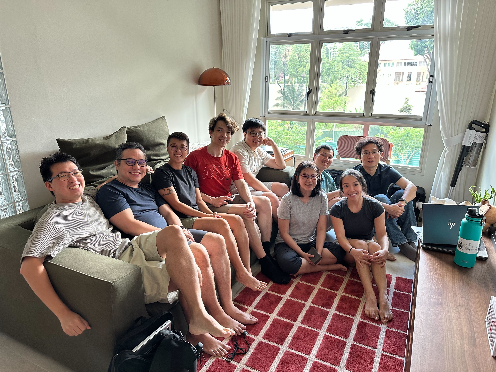
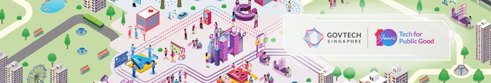
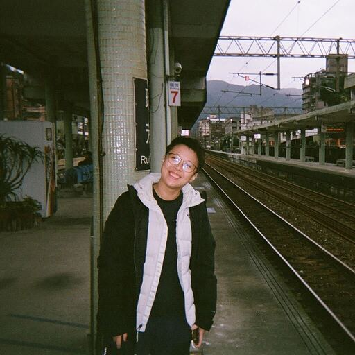
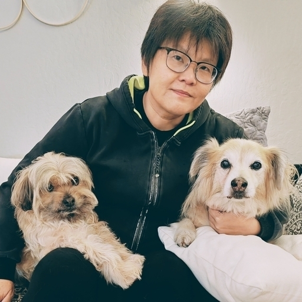
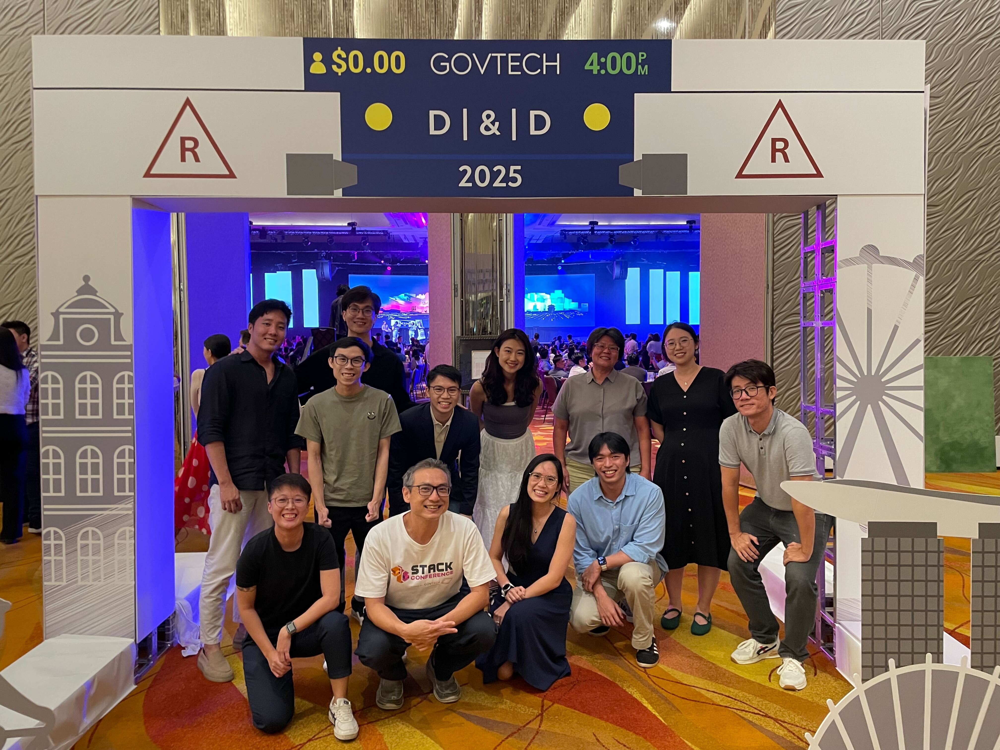
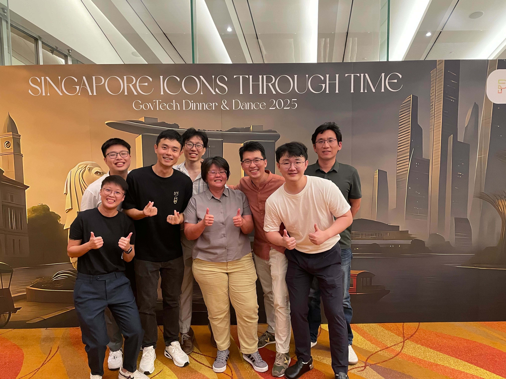
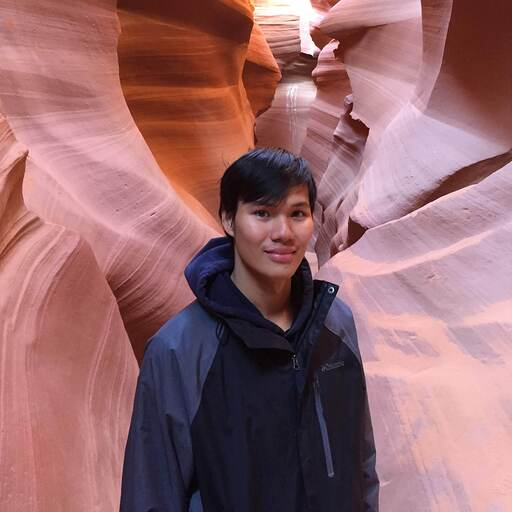
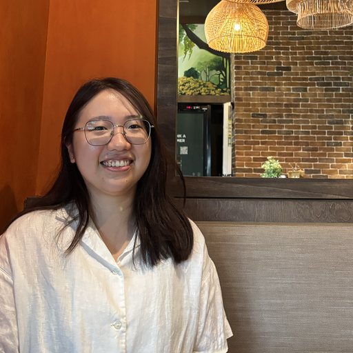

on the week where everyone resigned
Retro + Housewarming at my new BTO!

liked by the whole team
a thread of replies


Product Manager & Software Engineer
It takes a rare individual to seamlessly bridge two different worlds, but Shermin makes it look effortless.
Shermin is someone who simply gets things done - be it the small, behind-the-scenes tasks that compound or massive, high-impact projects, she brings the exact same level of dedication and excellence to the table.
Shermin is super approachable, deeply grounded, and radiates a genuine warmth that makes everyone feel instantly at ease. Shermin faces ambiguity and challenges with perseverance and steady determination, proving time and again that she is not just an indispensable powerhouse, but an incredibly special human being to work alongside.
We will miss you, Shermin!
A few things she'll be remembered for
Somehow always bad luck kenna all the fire, need to put in extra effort to extinguish. Suay!
Kicked off the Geospace DataHive epic — one of those ideas that looked impossible on paper until she made it Fangshan's problem to solve.
Started as one of L's earliest customers, then crossed the aisle to become its PM. Nobody knows the platform's pain points quite like someone who lived them first.
Moments worth reposting · ~5 posts
Retro + Housewarming at my new BTO!


Dinner and Dance 2025 🕺💃 Free Booze!


The official record (mostly true) — endorsed by the team
~8 notes from the people who got to work beside her

Hello! Thank you for being a source of strength on L. A spark of inspiration led me down the rabbit hole which ended up with me purchasing this domain. I hope you enjoyed it and continue using it next year and onwards.
Wishing you all the luck you can carry onto your next job. I'm sure with all the bad luck you got with us, Karma's gonna reward you very soon with a bigass IPO. HUAT AH!!! 💰💰
I couldn't have asked for a better PM, friend, and colleague. Thank you for your unwavering support and can-do attitude you bring to all the work, your balanced judgements, your undying patience with our system and its inefficiencies. I have cherished and valued having you since you were one of our first L users at JTC, and then I was glad to interact with you more in your role at GDD where I believe you helped to legislate one of the most impactful things MDDI has ever delivered, GDA version 1. When you offered to step up as L PM, I knew L was in good hands. Any organization would be lucky to have you, and I believe many of us here will miss you when you aren't around anymore to bring your sharpness, candour and tenacity to our teams. Be well, may the work of your hands always bear good fruit, and keep being that positive Shermin we all know and love :). Stay in touch!
Thank you for walking this journey with us on DataHive and L, both at GDD and GovTech. These were never easy problems, and the path was rarely smooth. There were plenty of moving goalposts, ambiguity, and moments where the easier option would have been to settle for less.
What I'll remember is that we kept going anyway. Together, we showed that government can do hard things, and sometimes even the seemingly impossible, when people are willing to push through the complexity and stay anchored on why the work matters.
DataHive and L carry the fingerprints of many people, and yours is certainly one of them. Thank you for the partnership, resilience, and for being in the trenches with us through the highs, frustrations, and small wins that eventually became something real.
Wishing you all the best for what comes next, and hoping our paths cross again.

Hello Sherms!! Thanks for your hard work in bringing DataHive into existence, thanks for your genuine presence and open-mindedness which always make work better! Sorry I can't catch you at the farewell lunch but we can catch up later!! All the best for your future endeavors 🫡💚
Hey Sherms, thank you for all you have contributed to DataHive, from the Marvel days to Geospace and also the Data Dependencies work - and for juggling all of that while pursuing your further studies, which is no small feat!
I will really miss your presence in the team. Working with you has made things genuinely more fun, and has helped me navigate some of the more... absurd moments as a fellow PM in Data Programme. Thank you for always being willing to call things out when needed, and just as readily stepping in to help and guide others.
Wishing you all the best for what's ahead - I'm sure you'll find every success. Stay in touch!
Hi Sherms! Thank you for being so welcoming from the very beginning -- I still remember when I had just joined GDD and was trying to find my footing. You welcomed me like I've been with the team for a long time, and your openness, patience and generosity kept me going. No matter how busy and crazy things got, you were always so generous with your time, advice, and support.
You're incredibly sharp and tenacious, and I've learned so much from you! Thank you for all of your contributions and the everlasting impact you've had on the people around you. I'll miss you very much, but I'm so excited to see all the amazing things you'll accomplish next. All the best for the next chapter of your life, and let's hang out in the NE soon! I want to meet Ollie hehe.
Thanks so much for all your guidance and the detailed handover. You've made taking over your scope way less daunting 😊
All the best for what's next - you'll be missed!